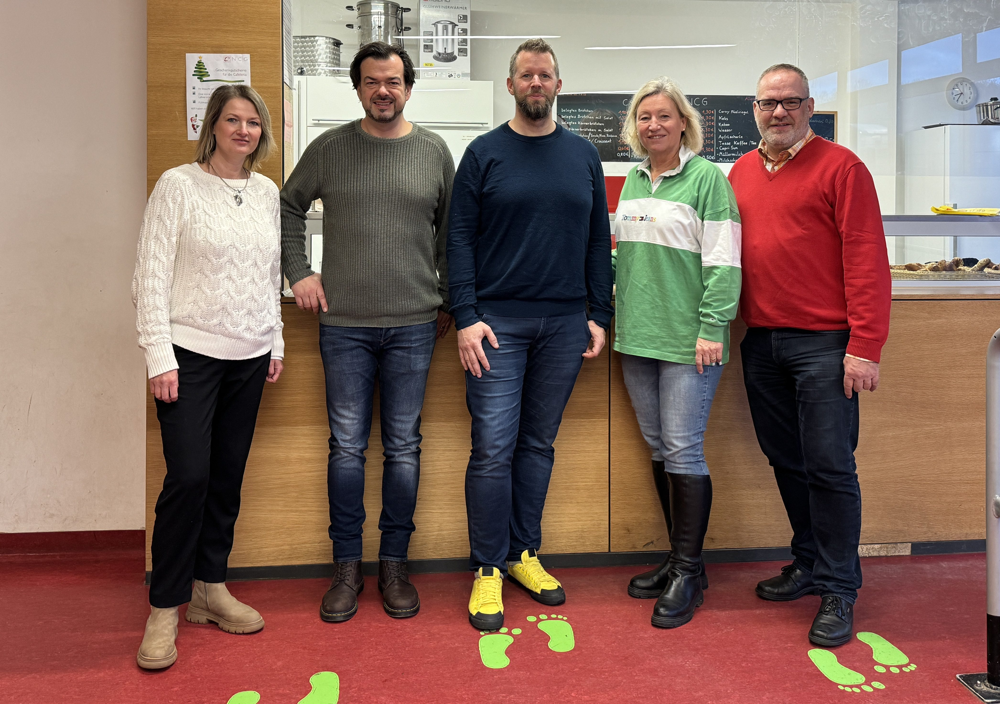

Der Förderverein des Nicolaus-Cusanus-Gymnasiums unterstützt das Schulleben durch finanzielle Hilfe, Projekte und ehrenamtliches Engagement.
Werden Sie Teil unserer Gemeinschaft:
Bis Ende des Schuljahres: Mitglied werden und Gratis-Produkte in der Cafeteria erhalten!
Sie können uns auch beim Online-Shopping unterstützen – ohne Mehrkosten:
Plattformen: gooding.de und bildungsspender.de
Unser Förderverein lebt von Zusammenhalt und Ehrenamt. Viele Eltern unterstützen aktiv z. B. in der Cafeteria. Jede Mitgliedschaft stärkt unsere Schulgemeinschaft.
Der Vorstand besteht aus Eltern, Lehrkräften, Ehemaligen und Freunden des NCG und wird durch viele ehrenamtliche Helfer unterstützt.
Als Mitglied werden Sie Teil einer Gemeinschaft, die Bildung und Entwicklung aktiv fördert. Ihre Unterstützung macht einen echten Unterschied.
📄 Einen Flyer mit allen Infos finden Sie hier